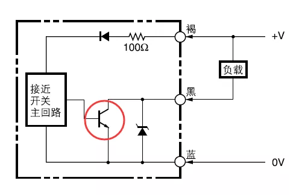
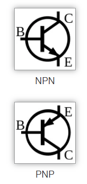
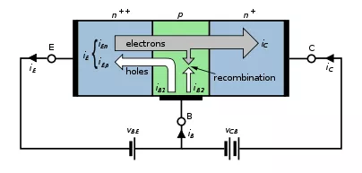
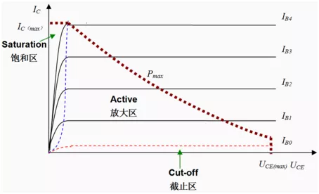
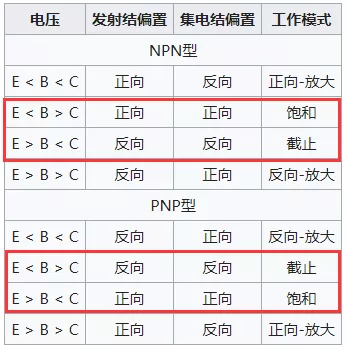
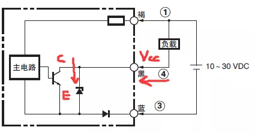
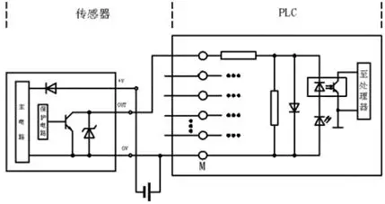
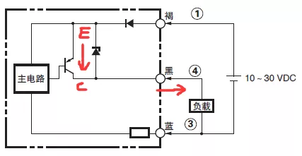
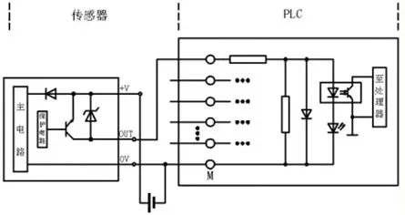

1.描述
对于PLC开关量输入模块要么连接的是“无源”干接点信号，如继电器触点、位置开关；要么连接的就是”有源”开关器件信号，如接近开关、编码器。
对于“无源”干接点信号，其对于电流没有流入、流出之分，公共端0V和24V的开关量输入模块都可以连接，所以不存在选型问题。
而“有源”开关器件信号就不一定了，那传感器和模块如何匹配？下面以接近开关为例解答。
2.三极管
接近开关，其基本原理是通过一主回路控制双极性结型晶体管（bipolar junction transistor, BJT，俗称三极管）的截止与饱和来输出OFF、ON信号。

这里先复习下三极管的基本工作原理：
三极管可分为NPN、PNP两种类型，在双极性晶体管电学符号中，箭头指向为正向放大时电流的方向（电子迁移的反方向）。
NPN型晶体管的箭头从基极B指发射极E，PNP型晶体管的箭头从发射极E指向基极B。

下图中左边的蓝色区域为发射极E，中间绿色区域为基极B，右边蓝色区域为集电极C。灰色的箭头为电子的流动方向示意，发射极注入的大部分电子移动到了集电极，少部分在基极与空穴复合。白色箭头为基极的多数载流子空穴的流动方向示意。

NPN型双极性晶体管处于截至区的条件是：Vbe<导通电压。
NPN型双极性晶体管处于正向放大区的条件是：在发射结上具有正向偏置(Vb>Ve)，而集电结具有反向偏置(Vb<Vc)。
NPN型双极性晶体管处于饱和区的条件是：在发射结上具有正向偏置(Vb>Ve)，集电结正向偏置(Vb>Vc)，且Vce<Vbe。
下图为双极性晶体管的输出特性曲线

蓝色虚线左边的区域为饱和区（Saturation），Ic=Ics≈Vcc/Rc。
由蓝色虚线、红色虚线和棕色虚线包围的区域为放大区（Active），Ic≈βIb，在这个区域里，发射极电流与基极电流成近似线性关系。
红色虚线下方表示晶体管尚未导通，处于截止区（Cut-off），Ic≈0。
棕色虚线为晶体管的最大集电极耗散功率，它与两条坐标轴包围的区域为安全工作区，与横轴的交点为最大集电极-基极电压。
IB0为开启晶体管的最小基极电流（Vbe须超过其导通电压，约为0.5V）。
可以根据晶体管三个极的的偏置状态（注意：PNP型晶体管和NPN型晶体管的电压描述恰好相反），定义双极性晶体管几个不同的工作区。按发射结（基极-发射极结）、集电结（基极-集电极结）的偏置情况，工作区可以分为：

3.接近开关
NPN集电极开路输出型
下图为欧姆龙E2B型接近开关NPN集电极开路输出型号的接线原理图：

E2B型接近开关手册下载
百度网盘提取码：6y89
当物体靠近接近开关，主回路控制三极管饱和导通。从上面描述的三极管工作原理可知，此时集电极饱和电流Ics≈Vcc/Rc，从集电极C流向发射极E。从整个回路看：电流从负载端流出进入接近开关④引脚（黑线），从接近开关③引脚流出（蓝线）。且Vce=Vcc-Ics×Rc=Vces≈0.2～0.3V，Vces很小，集电极回路中的C、E极之间近似于短路，相当于开关闭合，VC≈VE≈0V集电极输出一低电平。
Vcc需由接近开关连接的负载提供，所以NPN集电极开路输出接近开关只能连接公共端为24V开关量输入模块。

PNP集电极开路输出型
下图为欧姆龙E2B型接近开关PNP集电极开路输出型号的接线原理图：

当物体靠近接近开关，主回路控制三极管饱和导通。从上面描述的三极管工作原理可知，此时集电极饱和电流Ics=Vcc/Rc，从发射极E流向集电极C。从整个回路看：电流从接近开关①引脚（褐线）流入，从接近开关④引脚流出（黑线），流入负载。集电极回路中的C、E极之间近似于短路，相当于开关闭合，VC≈VE≈24V集电极输出一高电平。
所以PNP集电极开路输出接近开关只能连接公共端为0V开关量输入模块。
